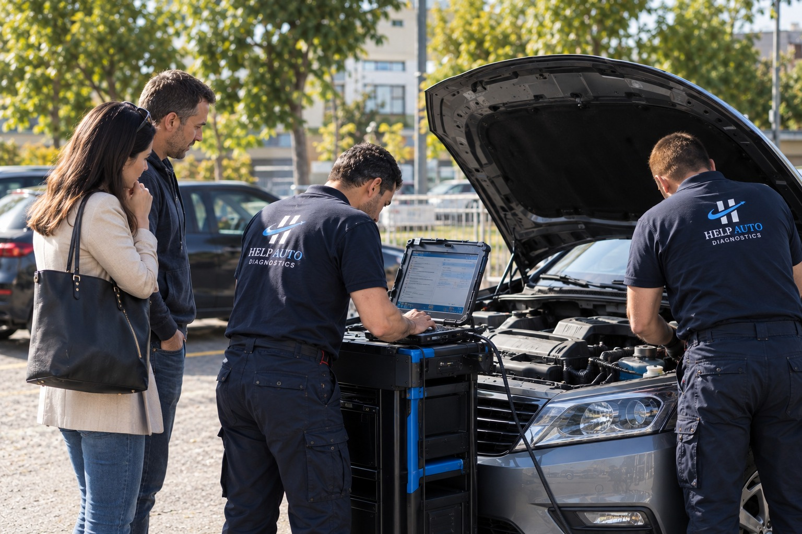
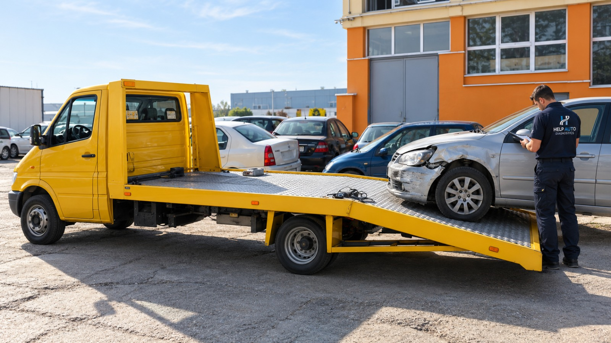
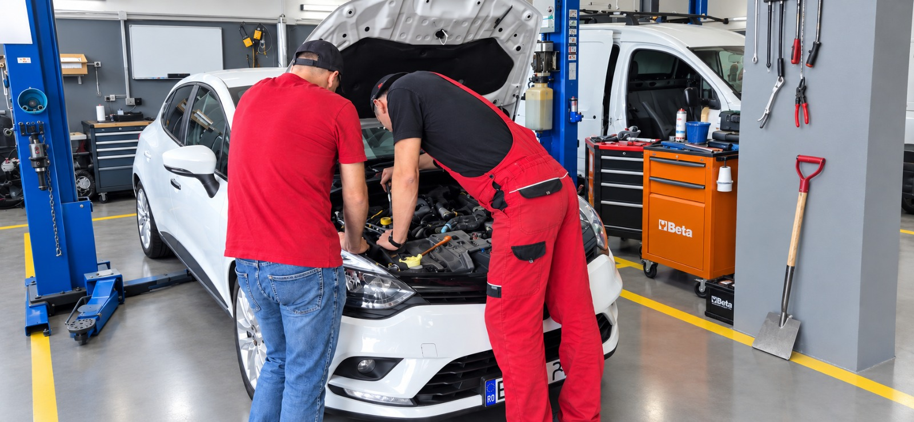
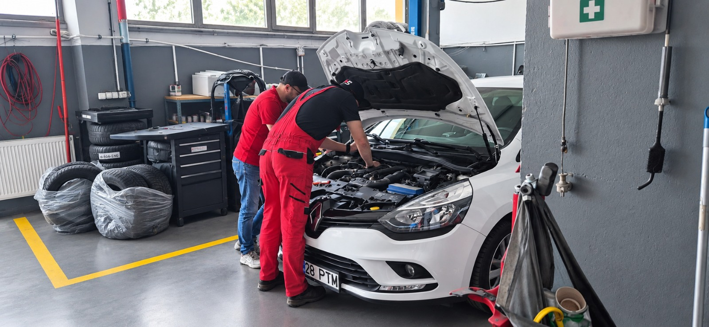

Continuitate în mobilitate.
Atunci când mașina se oprește, viața ta nu trebuie să se oprească odată cu ea.
Venim acolo unde ai nevoie de noi, identificăm corect problema și, atunci când situația o cere, te ajutăm să gestionezi întregul proces: diagnoză, transport la service, reparație și soluții de mobilitate.
- 20+ anide experiență în service auto
- București & Ilfovarie de acoperire
- 150 leidiagnoză, începând de la
- Mobilitatesoluții în funcție de disponibilitate
Mai mult decât o simplă diagnoză.
Fiecare situație este diferită. Uneori ai nevoie doar de o verificare rapidă. Alteori, ai nevoie de cineva care să preia întreaga intervenție.

Management complet al intervențieiSoluția Help
Preluăm întreaga situație: diagnostic, transportul mașinii la service, coordonarea reparației și soluții de mobilitate.
Descoperă Soluția Help Diagnoză
Diagnoză
Diagnoză și servicii electronice
Identificăm cauza reală a problemei și evităm schimbarea inutilă a pieselor.
Vezi serviciile Second-hand
Second-hand
Verificare înainte de cumpărarea unei mașini
Te ajutăm să iei o decizie informată și să eviți surprizele costisitoare.
Află mai multeTu îți continui activitatea. Noi gestionăm situația.
- Ne contactezi și ne explici problema.
- Diagnosticăm și îți explicăm clar ce se întâmplă.
- Stabilim împreună cea mai potrivită soluție.
- Dacă este necesar, organizăm transportul mașinii la service și coordonăm reparația.
- Pentru perioada reparației, identificăm o soluție de mobilitate pentru tine, în funcție de disponibilitate.
- Îți redăm mașina și liniștea.

Pentru că viața nu poate fi pusă pe pauză.
Știm că o mașină indisponibilă înseamnă mult mai mult decât o problemă tehnică. Înseamnă copii de dus la școală, întâlniri importante, tratamente medicale sau pur și simplu rutina de zi cu zi.
De aceea, atunci când este posibil, încercăm să găsim soluții pentru ca activitatea ta să fie afectată cât mai puțin.
Soluția noastră poate include:
- mașină la schimb (în funcție de disponibilitate);
- colaborare pentru transport pe platformă;
- preluare și predare mașină;
- coordonarea întregului proces.

Peste 20 de ani de experiență în service auto.
În spatele Help Auto Diagnostics se află Ciprian Burducea, inginer mecanic cu peste 20 de ani de experiență în domeniul auto.
În jurul experienței sale s-au format o echipă de specialiști și o rețea de parteneri care cred în același lucru: atunci când o mașină se oprește, oamenii au nevoie de mai mult decât o diagnoză. Au nevoie de soluții clare și de sprijin real.
Descoperă povestea noastră
Mobilitatea înseamnă uneori mai mult decât confort.
Credem că există situații în care posibilitatea de a merge mai departe poate face o diferență reală în viața unor oameni.
De aceea, alegem să ne implicăm în cazuri sociale selectate împreună cu partenerii noștri din comunitate.
Citește poveștile care merg mai departeUn părinte care trebuie să ajungă la tratamentele copilului.
Un profesor care nu renunță la elevii lui.
O familie care încearcă să o ia de la capăt.
Experiență practică, explicată pe înțelesul tuturor.
Vezi toate articoleleNu ești sigur care este soluția potrivită?
Spune-ne cu ce te confrunți și îți recomandăm următorul pas. Fără presupuneri. Fără stres inutil. Cu soluții clare.
Diagnoză începând de la 150 lei. București și Ilfov, în funcție de disponibilitate.